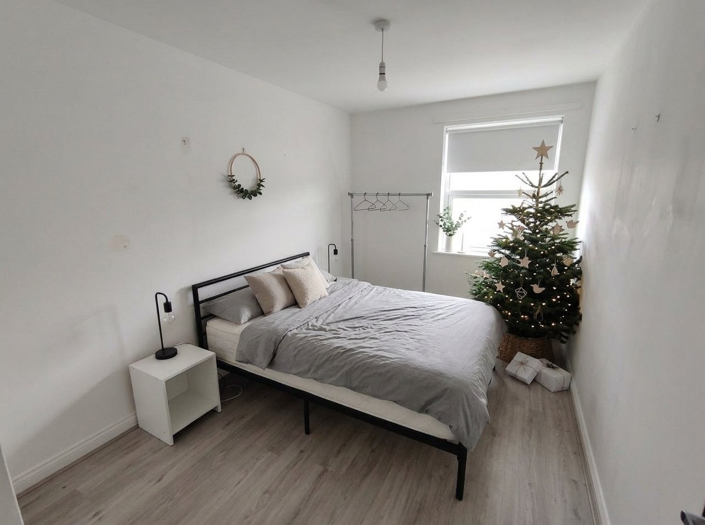
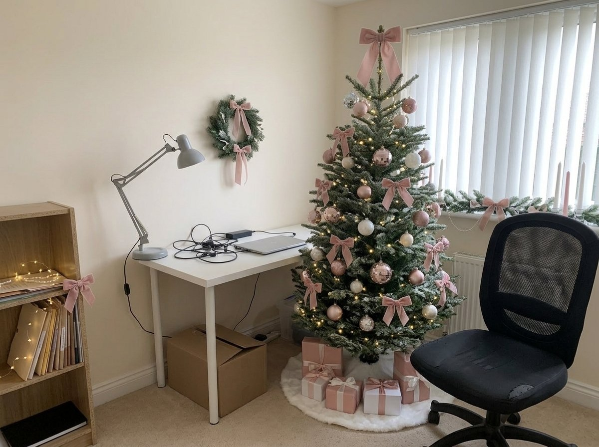

decor: 1/2
Nordic, whole room, auto spot. Bed, nightstand and clothes rail must stay put.
PASS Retry prompt after a failed frame check. Bed, nightstand and rail back in place, slightly wider view. Frame 0.68 (first attempt 0.00).

Coquette, whole room, auto spot. Desk, office chair, shelf and boxes must stay put.
FAIL Retry prompt after a failed frame check. Desk, chair, shelf and box are all back, but the view is still wider than the photo (frame 0.19, first attempt 0.17).

